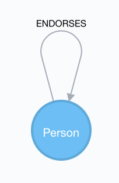

<style type="text/css" media="screen">
/*
.nodes-image {
	margin:-100;
}
*/
@import url("//maxcdn.bootstrapcdn.com/font-awesome/4.4.0/css/font-awesome.min.css");

.imageblock .content img, .image img {max-width: 900px;max-height: 300px;}
.deck h3, .deck h4 {display: block !important;margin-bottom:8px;margin-top:5px;}
.listingblock {margin:8px;}
.pull-bottom {position:relative;bottom:1em;}
.admonitionblock td.icon [class^="fa icon-"]{font-size:2.5em;text-shadow:1px 1px 2px rgba(0,0,0,.5);cursor:default}
.admonitionblock td.icon .icon-note:before{content:"\f05a";color:#19407c}
.admonitionblock td.icon .icon-tip:before{content:"\f0eb";text-shadow:1px 1px 2px rgba(155,155,0,.8);color:#111}
.admonitionblock td.icon .icon-warning:before{content:"\f071";color:#bf6900}
.admonitionblock td.icon .icon-caution:before{content:"\f06d";color:#bf3400}
.admonitionblock td.icon .icon-important:before{content:"\f06a";color:#bf0000}
.admonitionblock.note.speaker { display:none; }
</style>
<style type="text/css" media="screen">
#editor.maximize-editor .CodeMirror-code { font-size:24px; line-height:26px; }
</style>
<article class="guide" ng-controller="AdLibDataController">
  <carousel class="deck container-fluid">


<slide class="row-fluid">
  <div class="col-sm-12">
    <h3>Intro to the Dataset</h3>
    <br/>
    <div>
      <div class="paragraph">
<p>Welcome to the interactive guide concerning an example of a social network, an endorsement graph.

In thise guide we will learn how to import nodes and edges from CSV files, how to create indexes and constraints, and how to query for endorsements of a certain depth.</p>
</div>
<div class="paragraph">
<p>Let&#8217;s get started!</p>
</div>
	</div>
  </div>
</slide>


<slide class="row-fluid">
  <div class="col-sm-12">
    <h3>A Simple Social Network</h3>
    <br/>
    <div>
      <div class="paragraph">
<p>We will consider a simple social network, a graph with persons having a name, a job title, and a birthday. On top of that, persons can endorse each other. Consequently, our data model looks as in the following:</p>
</div>
<div class="imageblock">
<div class="content">

</div>
</div>
	</div>
  </div>
</slide>

<!-- Helge -->
<slide class="row-fluid">
  <div class="col-sm-12">
    <h3>Creating and Using Indexes</h3>
    <br/>
    <div>
      <div class="paragraph">
<p>You can create an index on certain attributes as in the following:</p>
</div>
<div class="listingblock">
<div class="content">
<pre mode="cypher"  class="highlight pre-scrollable programlisting cm-s-neo code runnable standalone-example ng-binding" data-lang="cypher" lang="cypher"><!--code class="cypher language-cypher"-->CREATE INDEX ON :Person(name);<!--/code--></pre>
</div>
</div>
<div class="paragraph">
<p>Usually you do not need to specify which indexes to use in a query. When indexes exist, they will be used in <code>WHERE</code> clauses for comparison operations, including equality, inequality, <code>IN</code>, <code>STARTS WITH</code>, <code>has</code>, <code>exists</code>, etc.
In case you want to get rid of an index, run:
</div>
<div class="listingblock">
<div class="content">
<pre mode="cypher"  class="highlight pre-scrollable programlisting cm-s-neo code runnable standalone-example ng-binding" data-lang="cypher" lang="cypher"><!--code class="cypher language-cypher"-->DROP INDEX ON :Person(name);<!--/code--></pre>
</div>
</div>
	</div>
  </div>
</slide>


  </carousel>
</article>
